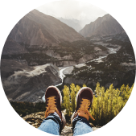
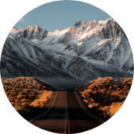
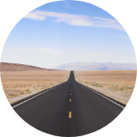
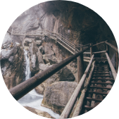
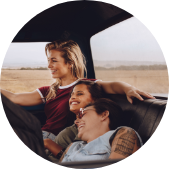

"We love Alyssa! Choosing a photographer was
one of the biggest decisions I had while
planning my wedding, and choosing Alyssa was
the best decision.
You are with your photographer for hours
throughout your day so you want someone
who is keeping track of time and keeping you
on brand with the shots you want.
We met in person prior to my wedding to talk
about the shots I wanted and we just ended up
chatting like long lost best friends. She was so
calm my entire wedding day and made me feel
so comfortable.”
Testimonials
I’ve worked with amazing people, families, non-profits, and brands to tell
memorable stories and capture unique moments. Here’s what some of them
had to say about our work together.
"When I needed updated photos for
my new website, I was thrilled by the
work Alyssa did. She was
professional, warm, and
approachable. I love the results of
our shoot and would recommend
her to anyone.”
Maria Connolly, eclipse designs
"For our second pregnancy announcement
we wanted to do a family photoshoot that
captured our excitement at the new life
coming, but also told the story of where
our family was at that precious moment in
time. Alyssa perfectly captured the love
between us, our joy, and told our story in
a way that I know will mean so much to
our family for years to come. I was so
grateful for her patience and positivity
throughout the shoot, and I can’t wait to
work with her again!”
Jeffrey Bull, San Francisco, CA
"I was recently featured in a trade
magazine, so I needed photographs
of my business for the first time. I
was nervous at first, but Alyssa was a
lot of fun and the photoshoot went
very well. I love her pictures, and so
did the editor at the magazine!”
Theo Fisher, Claw mark carpentry
Follow me on Instagram →




